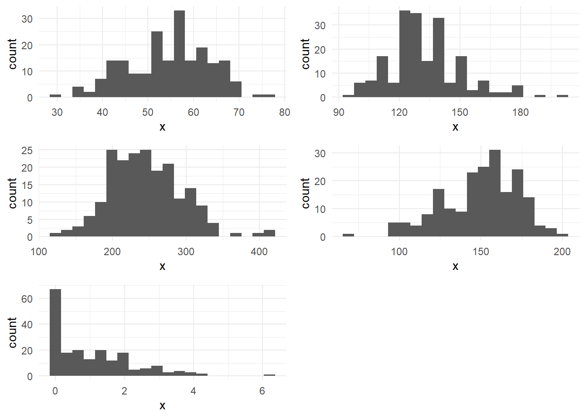

library(tableone) # for creating baseline characteristics table
library(knitr) # for rendering tables
library(labelled) # for setting variable labels
library(ggplot2) # for creating plots
library(gridExtra) # for arranging plots
# Customize variable labels
heart_data <- heart_data %>%
set_variable_labels(
age = "Age (years)",
sex = "Sex",
cp = "Chest Pain Type",
trestbps = "Resting Blood Pressure (mmHg)",
chol = "Cholesterol (mg/dL)",
fbs = "Fasting Blood Sugar",
restecg = "Resting ECG Results",
thalach = "Max Heart Rate Achieved",
exang = "Exercise-Induced Angina",
oldpeak = "ST Depression",
slope = "Slope of ST Segment",
ca = "Number of Major Vessels",
thal = "Thalassemia Type",
target = "Heart Disease Status"
)
# Define categorical variables
categorical_vars <- c("sex", "cp", "fbs", "restecg", "exang", "slope", "ca", "thal")
continuous_vars <- c("age", "trestbps", "chol", "thalach", "oldpeak")
# Define all variables for the table
all_vars <- c(continuous_vars, categorical_vars)
# Create the table
table1 <- CreateTableOne(vars = all_vars,
data = heart_data,
factorVars = categorical_vars)
# Create histograms for continuous variables
histograms <- lapply(heart_data[continuous_vars], function(x) ggplot(heart_data, aes(x = x)) + geom_histogram(bins = 20) + theme_minimal())
grid.arrange(grobs = histograms, ncol = 2)
# Render the table with knitr::kable
kable(print(table1, nonnormal = c("oldpeak"), varLabels = TRUE, printToggle = FALSE))| Overall | |
|---|---|
| n | 200 |
| Age (years) (mean (SD)) | 54.43 (9.03) |
| Resting Blood Pressure (mmHg) (mean (SD)) | 132.62 (18.33) |
| Cholesterol (mg/dL) (mean (SD)) | 245.18 (49.81) |
| Max Heart Rate Achieved (mean (SD)) | 150.06 (23.27) |
| ST Depression (median [IQR]) | 0.80 [0.00, 1.65] |
| Sex = Male (%) | 134 (67.0) |
| Chest Pain Type (%) | |
| Typical angina | 16 ( 8.0) |
| Atypical angina | 38 (19.0) |
| Non-anginal pain | 56 (28.0) |
| Asymptomatic | 90 (45.0) |
| Fasting Blood Sugar = True (%) | 29 (14.5) |
| Resting ECG Results (%) | |
| Normal | 102 (51.0) |
| ST-T wave abnormality | 2 ( 1.0) |
| Left ventricular hypertrophy | 96 (48.0) |
| Exercise-Induced Angina = Yes (%) | 66 (33.0) |
| Slope of ST Segment (%) | |
| Upsloping | 92 (46.0) |
| Flat | 92 (46.0) |
| Downsloping | 16 ( 8.0) |
| Number of Major Vessels (%) | |
| 0 | 122 (61.6) |
| 1 | 42 (21.2) |
| 2 | 22 (11.1) |
| 3 | 12 ( 6.1) |
| Thalassemia Type (%) | |
| Normal | 112 (56.3) |
| Fixed defect | 9 ( 4.5) |
| Reversible defect | 78 (39.2) |